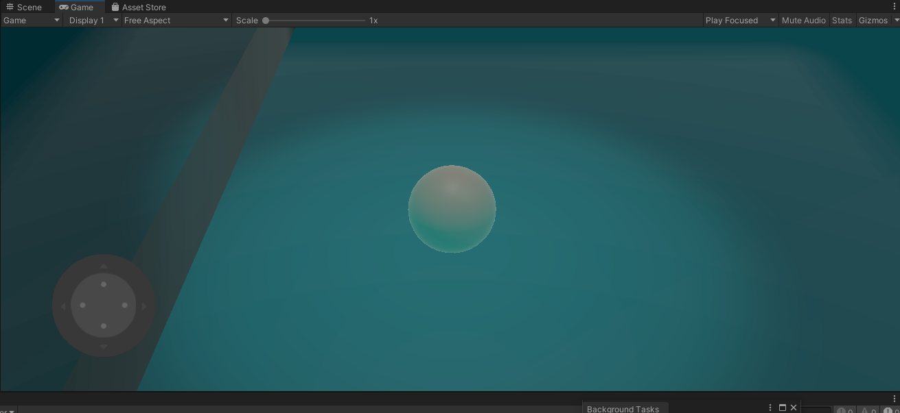

Marble Approach
Ever since I got my first iPod touch in 2010, I have always held the desire to upload an app on the App Store. I used to adore the simplistic games of the early mobile era. After receiving an education in Software Engineering and Unity Development, I decided to start working on making a mobile game that speaks to the older generation of iOS Apps. The goal of Marble Approach is a simple, "Get from point A to point B", type game, similar to the style of the Super Monkey Ball games.
I want the game to look aesthetically beautiful, yet simple enough to not cloud the user's screen with unnecessary stimuli. For this reason, I am considering having no UI during gameplay, except for when the game is paused. Currently, there is a Joystick which allows the player to move the ball on screen. A potential compromise would be reducing the opacity of the Joystick to a low level.
Modern mobile games often receive negative feedback based on an abundance of microtransactions or time limited gameplay. For this reason, along with my personal ideals, I won't include any of the forementioned attributes in the game. I want the player to feel as though they are progressing through the game and making achievements through the pace of their choice.
The largest challenge I have to face while making this game is finding a middle ground between aesthetics and performance. I want the game to look nice, but also run on any typical mobile device without slowdowns. I want the lighting of the environment on each platform to change based on the player's movement, drawing them into the game more.